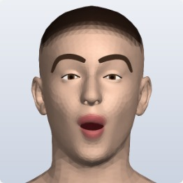
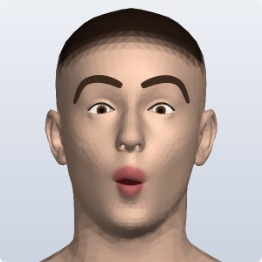
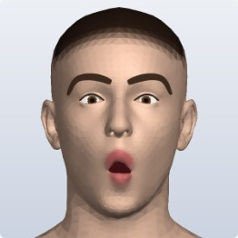
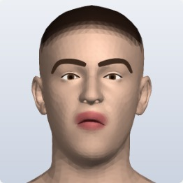
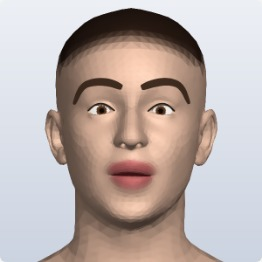
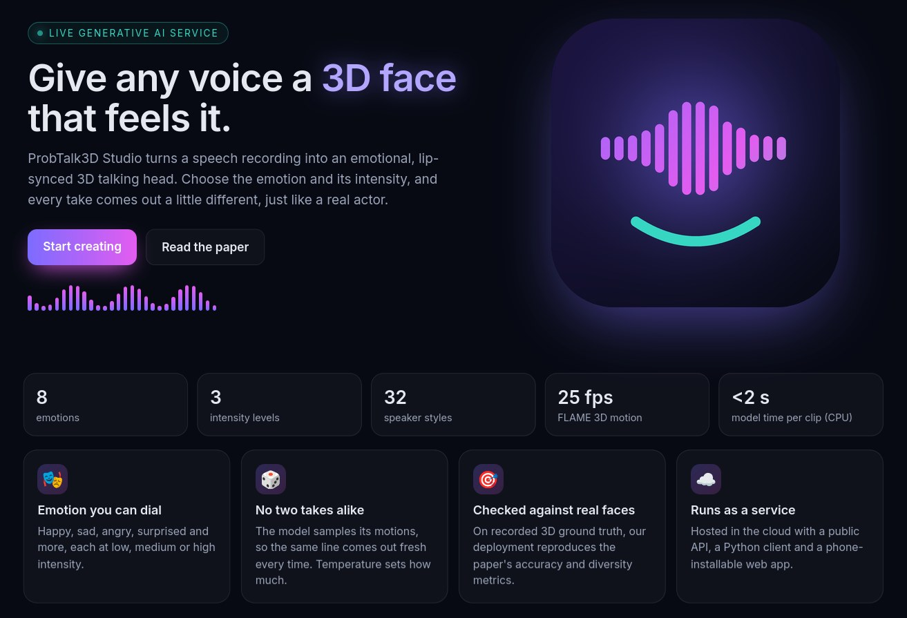
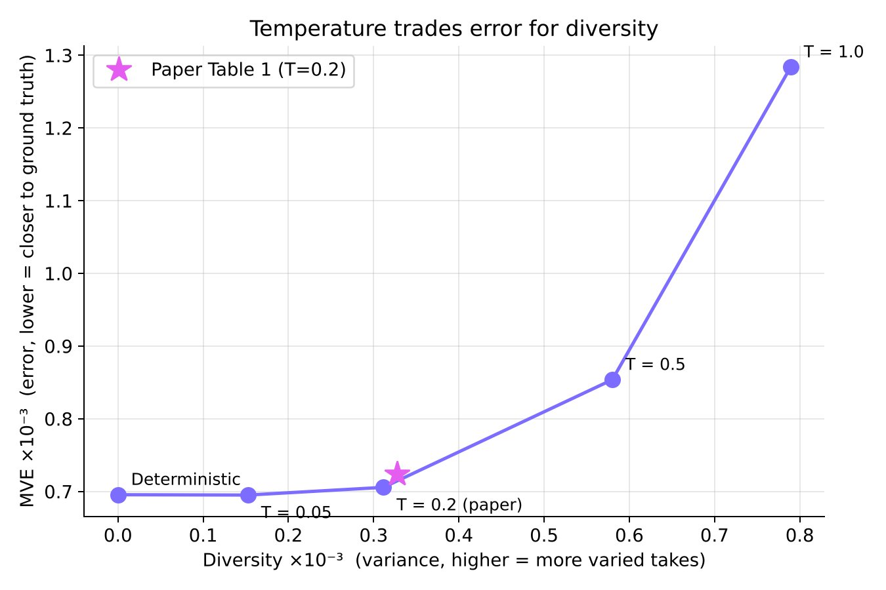
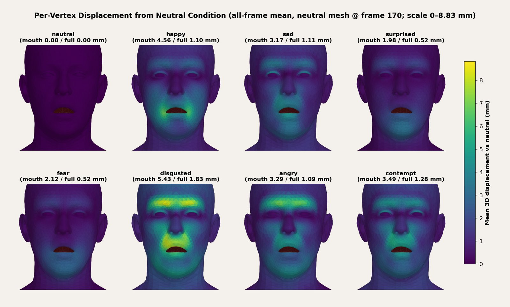
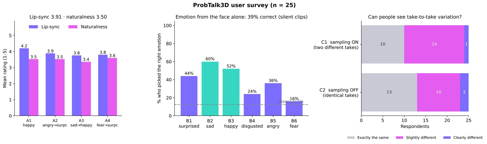
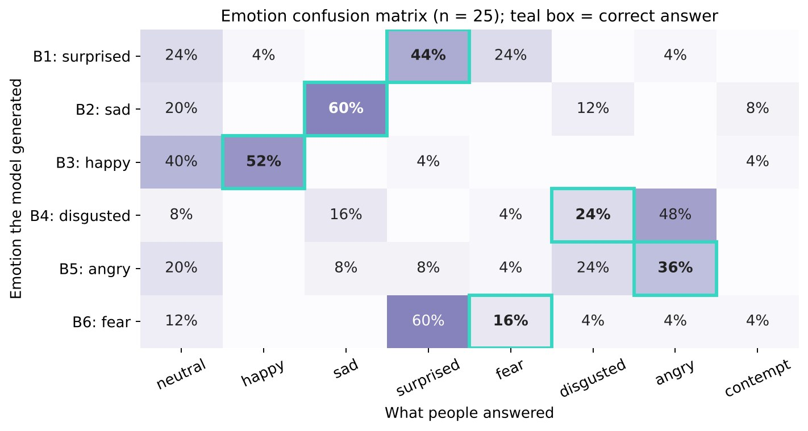

We took ProbTalk3D, a research model that animates a 3D face from speech, got it running on today's software, verified the paper's claims on real data, and turned it into a cloud service with a web studio, an API and a phone app.
ProbTalk3D (Wu, Haque and Yumak, Utrecht University) was the first model to offer both emotion control and a fresh performance on every run. Earlier models had one or the other.
A 43-number style input picks the speaker (32), the emotion (8) and the intensity (3).
The model samples its motions instead of always taking the closest one, so the same line comes out a little differently each time.
Our deployment serves a browser studio, a /generate API, a Python client and an installable phone app.
A recording of the live studio: upload a voice, pick the speaker, emotion and intensity, and generate. At the end, three takes of the same line play side by side. Long waits are sped up.
Rendered with our own HD face renderer, which adds hair, eyes, eyebrows and lips to the FLAME head model without Blender.

Happy, high
Surprised, high
Angry, high
Disgusted, low
Surprised, mediumA two-stage VQ-VAE. Stage 1 learns a codebook of 256 real facial motions from 3D faces, with no audio. Stage 2 listens to the speech and learns which codebook entries to use.
During training the nearest codebook entry always wins. At generation time the model draws an entry at random, with closer entries more likely. Temperature T sets how far it can wander; the paper uses 0.2. Every entry is real learned motion, so every take stays realistic.
Three milestones, from reading the code to a working service.
Traced one run end to end through the repository and flagged six risks early: Python 3.9 with 182 pinned packages, a broken HuBERT import, PyTorch 2.6 checkpoint loading, batch size 1 only, weights on Google Drive, and Blender for rendering.
Got the authors' model running in Colab on Python 3.13 and PyTorch 2.11 with 38 packages instead of 182 and only three small loading patches. No changes to the network or its maths.
A Docker Hugging Face Space that loads the model once (under 1 s per request after that), renders HD video on all CPU cores, and serves a Gradio studio, an API and a Python client.

generation.py exactly (max difference 0.000).git push rebuilds the service automatically.We downloaded the paper's own test data (MEAD audio paired with 3DMEAD faces) and ran the authors' metric code, streamed so it fits in laptop memory: 478 sequences, 57,715 frames, 8 of the 32 test speakers, 10 samples each, T = 0.2.
| Metric | Paper | Ours | Diff |
|---|---|---|---|
| MVE ↓ | 0.7243 | 0.7056 | −2.6% |
| LVE ↓ | 0.6040 | 0.6418 | +6.3% |
| MEE ↓ | 0.5549 | 0.5918 | +6.6% |
| CE ↓ | 0.5227 | 0.5688 | +8.8% |
| FDD ↓ | 0.0415 | 0.0537 | +29% |
| Diversity ↑ | 0.3274 | 0.3116 | −4.8% |
Paper scales. FDD values are tiny (about 5 × 10⁻⁷), so small gaps look large in percent.
| Setting | MVE ↓ | LVE ↓ | Diversity ↑ |
|---|---|---|---|
| Sampling off | 0.6955 | 0.6364 | 0.0000 |
| T = 0.05 | 0.6951 | 0.6346 | 0.1526 |
| T = 0.2 (paper) | 0.7056 | 0.6417 | 0.3116 |
| T = 0.5 | 0.8537 | 0.8059 | 0.5800 |
| T = 1.0 | 1.2837 | 1.4393 | 0.7893 |
Same 478 clips. At 0.2 error rises only about 1.5% over sampling off, with real variety; at 1.0 error nearly doubles.


An anonymous survey of 20 people who watched 12 short clips: 4 rated with sound, 6 silent clips where they guessed the emotion, and 2 take pairs (one an identical control).

